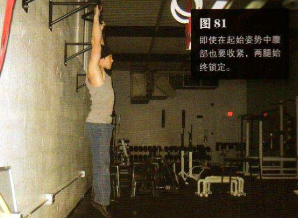
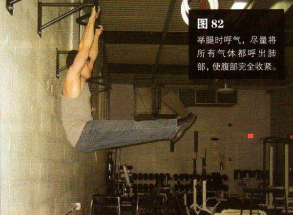

抓住头顶的横杆，要保证身体悬垂时双脚依然离地。双手大致与肩同宽，双肩收紧
平缓地举起双腿，直到它们与地面平行，此过程至少要持续 2 秒钟。举腿时呼气，尽量将所有气体都呼出肺部，使腹部完全收紧。这是该动作的结束姿势（图82）。暂停一下，然后反向运动，回到起始姿势，这一过程至少也要持续 2 秒钟，在此过程中吸气。即使在起始姿势中腹部也要收紧，两腿始终锁定，整个运动过程中只用肌肉控制，不要用惯性。
初级标准：1 组，5 次
中级标准：2 组，各 10 次
高级标准：2 组，各 30 次